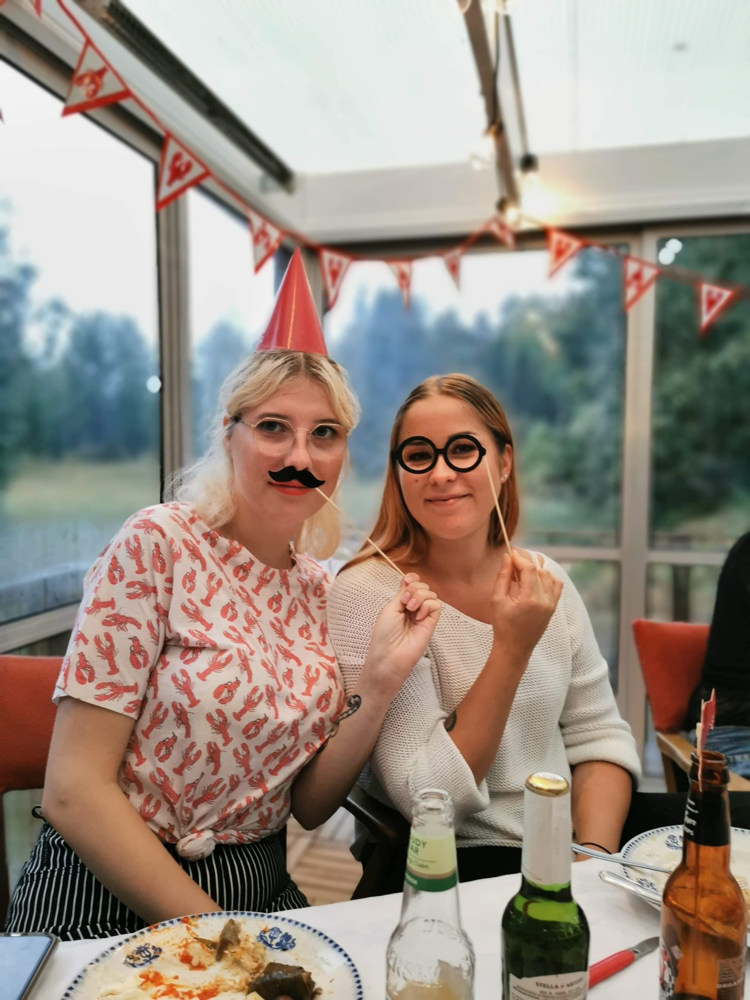

Om lilla jag
Hej, jag heter Clara Törnblom och jag är 25 år gammal.

Jag har inga mellannamn, vilket är en bra fråga för eventuella frågesporter om mig.
Jag gillar mat, speciellt från min Aifryer. Jag gillar att äta maten med vänner och familj, eller själv i soffan (då kan jag äta allt själv). Trivs också väldigt bra på äventyr i skogen, tur att jag bor på landet!
Fast det är lite vanligare att jag bara tar en öl i stan.
Jag är jätteduktig på att prata, mina vänner säger att det är som att lyssna på en podcast, men inte alls bra på att skriva, så detta kanske är lite oklart..
I alla fall, de säger att en bild säger mer än tusen ord. Här har ni min Instagram, det blir tatalt 692.000 ord (623.000 om vi räknar med fötterna).
Jag gillar mat, speciellt från min Aifryer. Jag gillar att äta maten med vänner och familj, eller själv i soffan (då kan jag äta allt själv). Trivs också väldigt bra på äventyr i skogen, tur att jag bor på landet!
Fast det är lite vanligare att jag bara tar en öl i stan.
Jag är jätteduktig på att prata, mina vänner säger att det är som att lyssna på en podcast, men inte alls bra på att skriva, så detta kanske är lite oklart..
I alla fall, de säger att en bild säger mer än tusen ord. Här har ni min Instagram, det blir tatalt 692.000 ord (623.000 om vi räknar med fötterna).